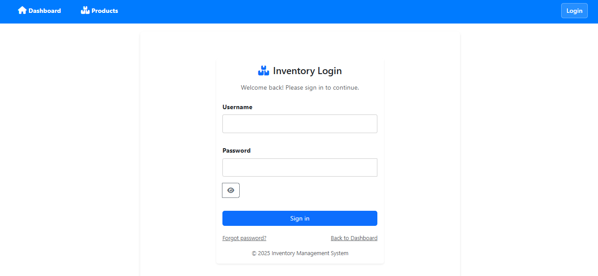
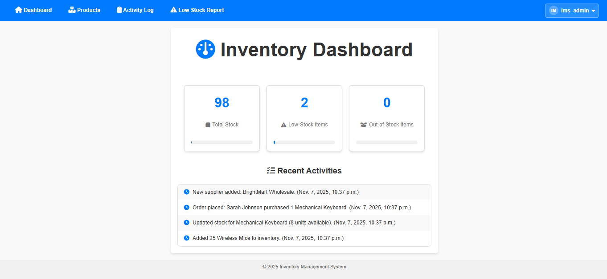
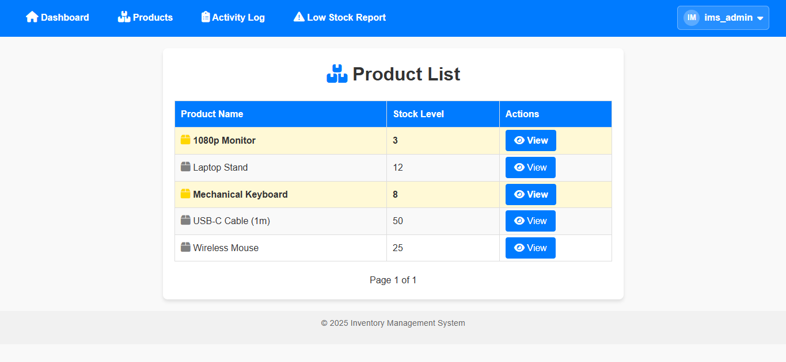
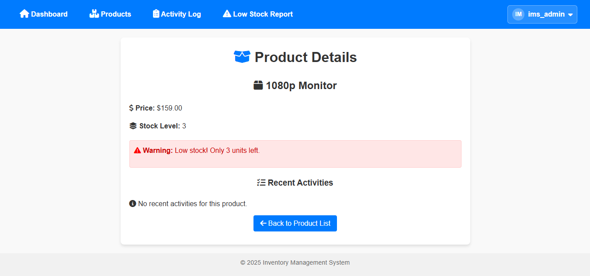
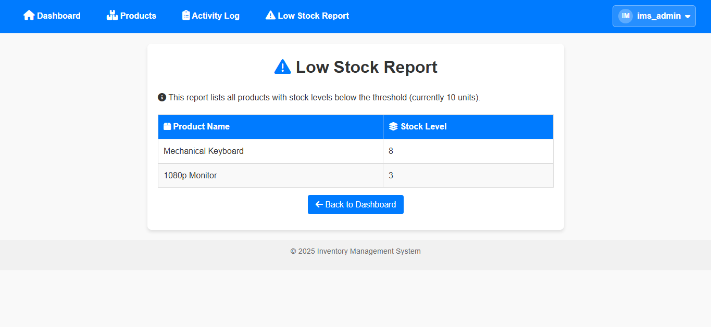
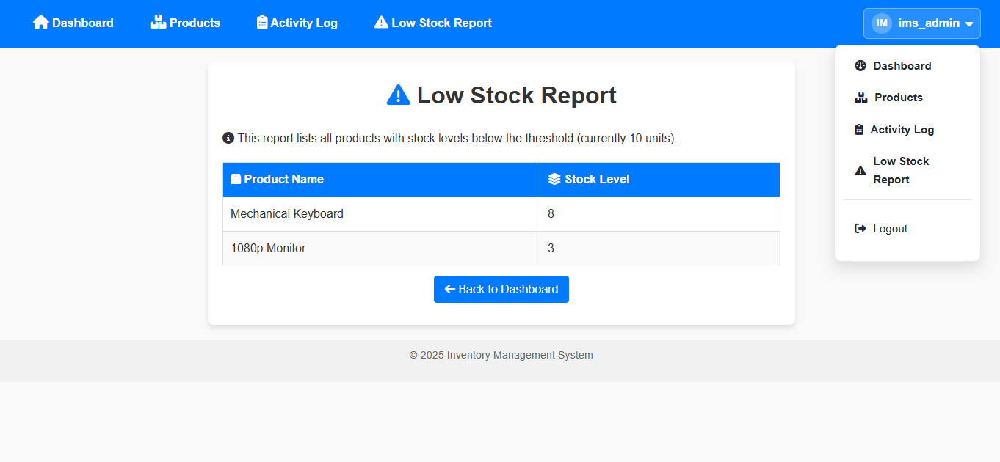

Software Design Enhancement: RBAC
CS-499 Capstone
/
Software Design Enhancement
For this enhancement, I added Role-Based Access Control (RBAC) to my Django Inventory Management System. This update introduces user roles with different access levels, improving both security and overall project structure.
Overview
RBAC ensures that the system checks a user's role before allowing certain actions. This creates a more realistic and maintainable design, similar to what many organizations use in real applications.
User Roles
- Admin — Full access to all features and settings.
- Manager — Can manage inventory and view system activity.
- Staff — Can view product information but cannot make changes.
Benefits of RBAC
- Protects important actions such as updating stock or marking featured products.
- Creates a clear structure for future additions or access levels.
- Aligns the system with common software engineering practices.
Technical Enhancements
Key Updates Implemented
- Added custom permissions tied to inventory and product management.
- Created Admin, Manager, and Staff roles using Django Groups.
- Applied permission checks in key views to protect sensitive actions.
- Updated the navigation to show certain links only to authorized roles.
- Restricted the “featured product” toggle to Manager and Admin roles.
- Built a new management command (
setup_rbac) to create roles automatically.
Files Updated for RBAC
inventory/models.py — Added custom permissions.inventory/views.py — Applied login and permission decorators.templates/base.html — Role-aware navigation.templates/inventory/product_list.html — Restricted featured toggle.inventory/management/commands/setup_rbac.py — New command to set up roles.
Outcome & Reflection
This enhancement strengthened the system's design by introducing clear, maintainable rules for what each user can access. It supported the Software Engineering/Design outcome by improving structure, security, and clarity without altering the original purpose of the project.
I learned how to apply Django's permission framework in a practical way and determine which parts of the code needed changes. Being intentional about modifying only the necessary files helped keep the enhancement clean and easy to document.
GitHub & Tools
View the enhancement branch on GitHub:
View on GitHub
Technologies
- Python
- Django
- MySQL
- RBAC
- HTML/CSS
Screenshots
The following screenshots highlight the RBAC enhancement and improved UI components added to the Inventory Management System.
-

Login Page
-

Inventory Dashboard
-

Product List
-

Product Detail View
-

Low Stock Report
-

User Menu (RBAC)